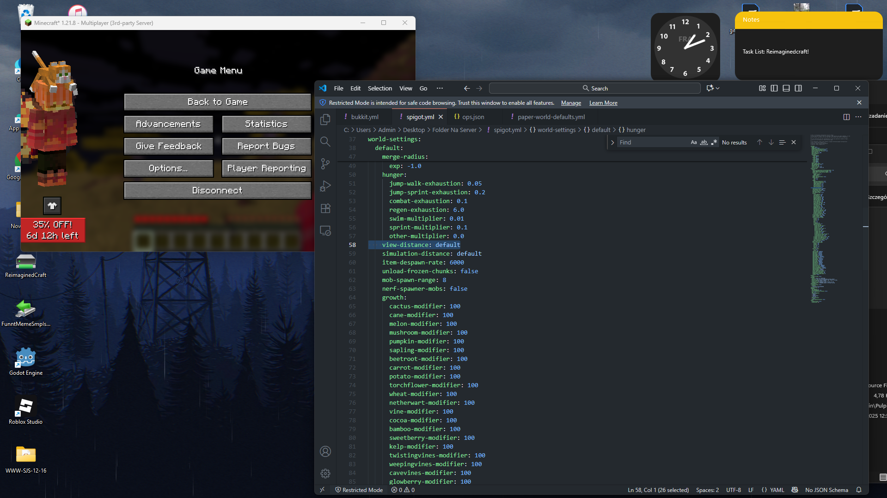

Kompleksowy przewodnik po optymalizacji serwera Minecraft dla maksymalnej wydajności.
💾 Zarządzanie Pamięcią RAM
Właściwa alokacja i zarządzanie pamięcią RAM to podstawa wydajnego serwera.
Ile RAM przydzielić?
Zbyt mało RAM = lagi i crashe. Zbyt dużo RAM = marnowanie zasobów i dłuższe garbage collection.
| Typ serwera | Gracze | Zalecana RAM |
|---|---|---|
| Vanilla/Paper Survival | 1-10 | 2-3 GB |
| Paper + pluginy | 10-30 | 4-6 GB |
| Duży serwer minigier | 30-100 | 8-12 GB |
| Modpack (Forge) | 5-20 | 6-10 GB |
Podstawowa alokacja
-Xms = minimalna RAM (start)
-Xmx = maksymalna RAM
🚀 Flagi JVM (Aikar's Flags)
Zaawansowane flagi JVM znacząco poprawiają wydajność poprzez optymalizację garbage collectora.
Flagi Aikar - Standard przemysłowy
Te flagi są powszechnie uważane za najlepsze dla serwerów Minecraft:
Wyjaśnienie kluczowych flag
| Flaga | Opis |
|---|---|
| -XX:+UseG1GC | Używa garbage collectora G1 (najlepszy dla Minecraft) |
| -XX:MaxGCPauseMillis=200 | Maksymalny czas pauzy GC = 200ms |
| -XX:+AlwaysPreTouch | Inicjalizuje pamięć przy starcie (szybsze działanie) |
| -XX:G1HeapRegionSize=8M | Rozmiar regionu heapa (optymalne dla MC) |
| -XX:+DisableExplicitGC | Wyłącza manualne wywołania GC |
Flagi dla różnych ilości RAM
Dla 2-4 GB RAM:
Dla 6-10 GB RAM (zalecane pełne flagi Aikar)
Dla 12+ GB RAM:
🎨 Optymalizacja Renderowania
Zmniejszenie obciążenia związanego z renderowaniem i przesyłaniem danych.
View Distance vs Simulation Distance
View distance: Jak daleko gracze widzą chunki
Simulation distance: Jak daleko działają mechanizmy (moby, redstone)
View: 6-10 (zależnie od RAM)
Simulation: 4-6 (zawsze mniejsze od view)
Entity Distance (Spigot)
Zmniejszenie tych wartości redukuje obciążenie sieci i CPU.
🌍 Optymalizacja Światów
Zarządzanie i optymalizacja generacji oraz działania światów.
Ograniczenie rozmiaru świata
World border zapobiega nieskończonemu rozrastaniu się świata:
Mały serwer: 5000-10000 bloków
Średni serwer: 10000-20000 bloków
Duży serwer: 20000+ bloków
Pregeneracja chunków
Wygeneruj świat przed otwarciem serwera aby uniknąć lagów podczas eksploracji:
Czyszczenie nieużywanych chunków
Plugin jak WorldBorder pozwala usunąć chunki poza określonym obszarem:
Optymalizacja spawn mobów
📊 Monitorowanie TPS
TPS (Ticks Per Second) to najważniejszy wskaźnik wydajności serwera. Idealnie = 20 TPS.
Sprawdzanie TPS
Interpretacja wyników
| TPS | Status | Działanie |
|---|---|---|
| 19.5-20.0 | ✅ Doskonały | Brak problemu |
| 18.0-19.5 | ⚠️ Dobry | Minimalne lagi, monitoruj |
| 15.0-18.0 | ⚠️ Słaby | Wyraźne lagi, optymalizuj |
| <15.0 | ❌ Krytyczny | Natychmiast optymalizuj! |
Narzędzia diagnostyczne
Spark Profiler
Najlepszy plugin do profilowania wydajności:
Timings (Spigot/Paper)
Typowe przyczyny niskiego TPS
- Za dużo mobów (farmy, spawner)
- Zbyt wiele załadowanych chunków
- Źle napisane pluginy
- Nadmierna aktywność redstone
- Za mało RAM lub słaby CPU
- Generacja nowych chunków
- Nieoptymalne flagi JVM
- ✓ Używaj Paper zamiast Spigot
- ✓ Zastosuj flagi Aikar
- ✓ Ustaw odpowiedni view-distance (6-10)
- ✓ Ogranicz world border
- ✓ Pregeneruj chunki
- ✓ Zredukuj limity spawn mobów
- ✓ Regularnie monitoruj TPS
- ✓ Używaj pluginów optymalizacyjnych (ClearLag, FarmControl)